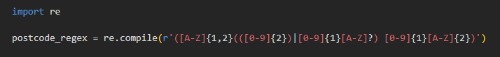
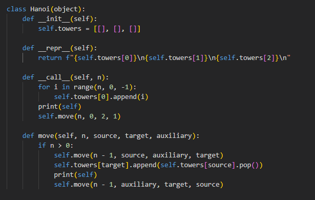
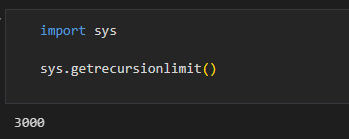

Language-Based Security
This is a collection of notes on language-based security, to gain a broad overview of the domain:
Programming Languages
Security Concerns
What factors determine whether a programming language is secure or not?: My own thoughts on what makes a programming language secure is different to what other researchers such as Cifuentes & Bierman, 2019 describe. I think that a programming language is secure if it can implement an application that assures security. My focus is on the existence of secure application protocols that can be implemented on any Turing complete programming language, and the differences in the implementation of those protocols between Turing complete languages. Researchers such as Cifuentes and Bierman instead focus on language mechanisms that provide protection against common security vulnerabilities.
Could Python be classed as a secure language?: Building upon my previous answer, Python could be classed as a secure language if secure application protocols exist and are implementable using Turing complete languages. Researchers such as Pillai (2017) have different views, and instead look at how easy it is to attack python applications without a security layer.
Readings
- Cifuentes, C. & Bierman, G (2019) What is a Secure Programming Language?. Available from: here. - Cifuentes and Bierman identify three categories of common vulnerabilities that they argue could be prevented through programming language design. Those vulnerabilities are: buffer errors, injection errors and information leak errors.
- Pillai, A. (2017) Software Architecture with Python: Architect and Design Highly Scalable, Robust, Clean and Highly Peformant Applications in Python. Birmingham, UK: Packt Publishing, 2017. ISBN 9781786468529 - Pillai presents a textbook on how to build secure applications in Python, including chapters on: security, testing, design patterns, and concurrency in Python.
Language Features
Regular Expression Engines
"A regular expression engine is a program that takes a set of constraints specified in a mini-language, and then applies those constraints to a target string, and determines whether or not the string satisfies the constraints" ( Perl ).
Example
To see an example of regular expression matching in Python, click here. Below is an example of a regex pattern for UK postcodes:
Security Concerns
What is ReDOS and what part do 'Evil Regex' play?: "The Regular expression Denial of Service (ReDoS) is a Denial of Service attack, that exploits the fact that most Regular Expression implementations may reach extreme situations that cause them to work very slowly (exponentially related to input size)" ( OWASP ). "A Regex pattern is called Evil Regex if it can get stuck on crafted input" ( OWASP ).
What are the common problems associated with the use of regex? How can these be mitigated?: Drawing on the work of Larson and Kirk (2016), common problems associated with the use of regex include the formation of regex that is too restrictive, or not restrictive enough. To mitigatate the formation of problematic regex, tools such as EGRET can be used. EGRET can automatically create a range of strings to test different parts of a regex expression. The results of the test can help the developer to determine whether the regex is too restrictive or not restrictive enough.
How and why could regex be used as part of a security solution?: "When an application accepts user input, it opens its doors to a wide range of potential vulnerabilities, like XSS, open redirect, and SQL injection. Regex is used to filter and sanitize user input as a defense mechanism against these attacks." ( OKTA, 2020 ).
Readings
- Larson, E. & Kirk, A. (2016) 'Generating Evil Test Strings for Regular Expressions'. IEEE International Conference on Software Testing, Verification and Validation (ICST). Chicago, USA, 2016. New York: IEEE. 309-319. - Larson and Kirk present EGRET, a nondeterministic finite automata that they use for generating a moderate amount of test cases that checks the suitability of a regular expression pattern as a filter.
- Larson, E. (2018) 'Automatic Checking of Regular Expressions'. 2018 IEEE 18th International Working Conference on Source Code Analysis and Manipulation (SCAM) . Madrid, Spain 2018. New York: IEEE. 225-234. - Larson present ACRE, a tool for checking regular expression patterns for common mistakes.
Response to Larson and Kirk (2016)
I found Larson and Kirk's regex tool, EGRET, really impressive. I can see the value in being able to generate test cases for regex expressions, but unlike Larson's latest tool ACRE (2018); Larson and Kirks exposure, of the nondeterministic finite automata that's behind EGRET, makes the tool much easier to scrutinise. The application of automata theory is a curiosity of mine, so I really appreciated this paper.
Recursive Algorithms
"An algorithmic technique where a function, in order to accomplish a task, calls itself with some part of the task" ( NIST ).
Example
To see an example of recursion in Python, click here. Below is an example of a 'tower of hanoi' problem solver, making use of recursion:
Security Concerns
What is uncontrolled recursion?: Uncontrolled recursion is when a "product does not properly control the amount of recursion that takes place, consuming excessive resources, such as allocated memory or the program stack." ( MITRE ).
Recursion Limit
Below is an example of how to find the recursion limit of your machine in python:
